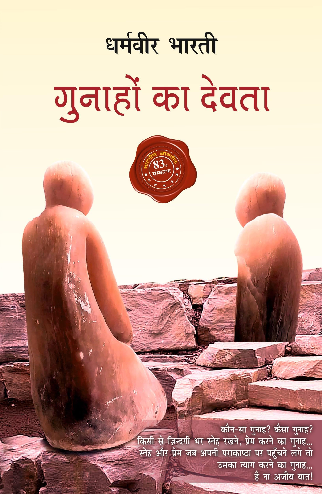
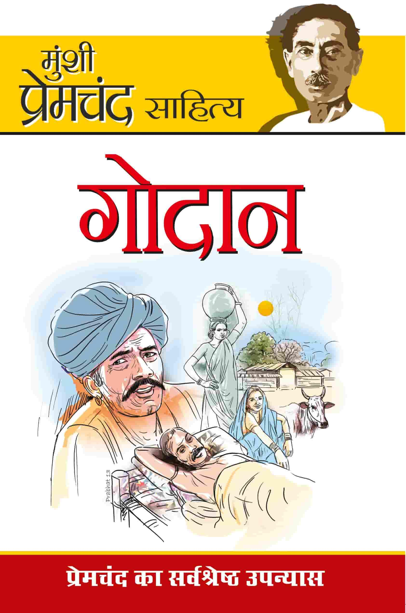
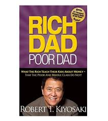
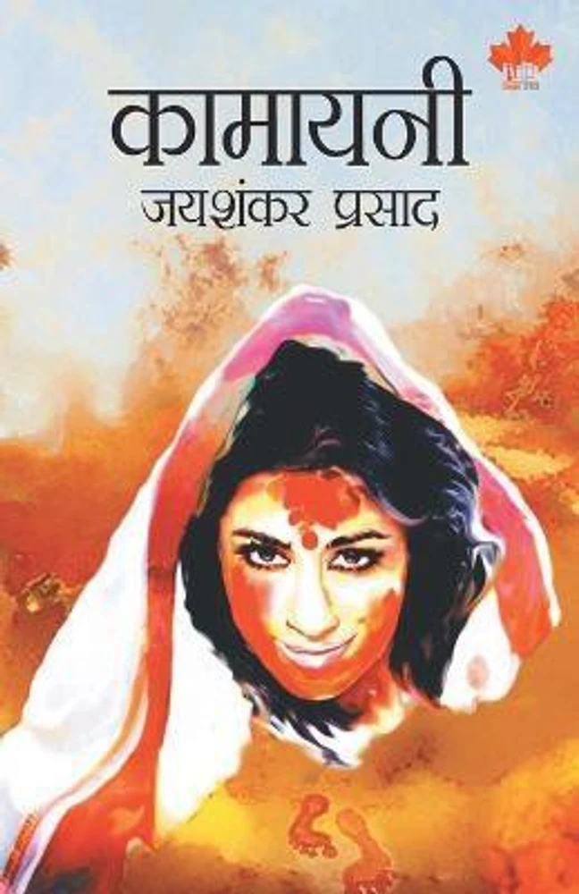

Recomended Books
Gunahon Ka Devta:-

About this book:-
"Gunahon Ka Devta" is a classic Hindi novel written by Dharamvir Bharati in 1949. It's a poignant love story
that explores deep emotional and philosophical themes. The story revolves around Chandar, a sensitive and
intelligent young man, and his deep affection for Sudha, the daughter of his mentor. Set in
post-independence India, the novel delves into the conflict between love, societal expectations, and
personal ethics.
The book beautifully portrays the complexities of human emotions, unspoken love, and the sacrifices people
make for duty and honor. Its lyrical language and rich emotional depth have made it a timeless favorite in
Hindi literature.
Godan:-

About this book:-
Godan is a famous Hindi novel written by Munshi Premchand, published in 1936. It is considered a masterpiece
of Hindi literature. The story revolves around Hori, a poor farmer, who dreams of owning a cow — a symbol of
wealth and respect in rural India.
The novel highlights the struggles of farmers, social injustice, and the exploitation faced by the poor due
to the caste system, landlords, and moneylenders. Despite his hardships, Hori tries to live an honest life
but is continuously oppressed by society.
Through this story, Premchand presents a realistic picture of rural India during British rule. Godan is a
touching portrayal of poverty, hope, and the strength of human character.
Rich dad poor dad:-

About this book:-
Rich Dad Poor Dad is a popular personal finance book written by Robert T. Kiyosaki. It compares the
financial mindsets of two father figures — the author’s "Poor Dad" (his real father) and his "Rich Dad" (his
best friend’s father).
The book teaches the importance of financial education, investing, building assets, and passive income. It
challenges traditional beliefs about money, such as depending only on a job and formal education.
The main message is: Don’t just work for money — make money work for you.
Kamayani:-

About this book:-
Kamayani is a famous Hindi epic poem written by Jaishankar Prasad, one of the major figures of the
Chhayavaad (romanticism) era in Hindi literature. It was first published in 1935.
The poem is symbolic and philosophical, based on the story of Manu, the first man after the great flood (as
per Hindu mythology), and explores his emotional journey. The characters Shraddha (faith), Ila (intellect),
and Kamayani represent human emotions and ideas.
Kamayani discusses the conflict between emotion and intellect, action and thought, and the inner struggles
of the human mind.
It is known for its deep meaning, rich language, and artistic expression, making it one of the greatest
works in modern Hindi poetry.